#2
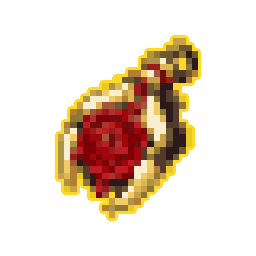
Общий лист · Обводка: до / после · Пикселизация: до / после · Все версии · Таблица
#2

#5
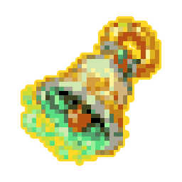
#6
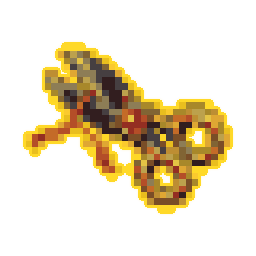
#7
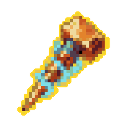
#8
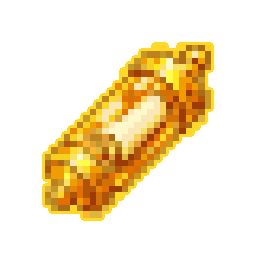
#9
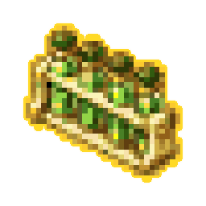
#11
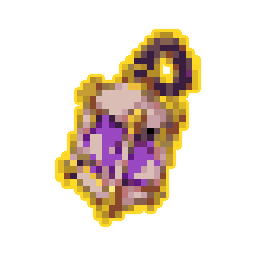
#12
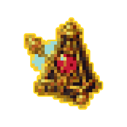
#13
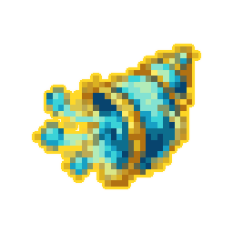
#15
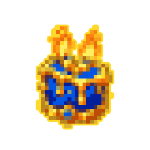
#16
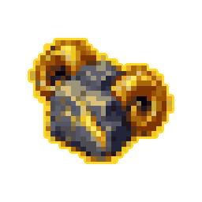
#17
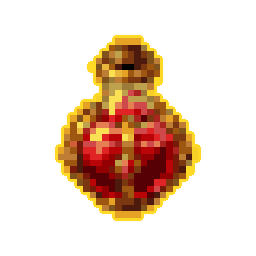
#20
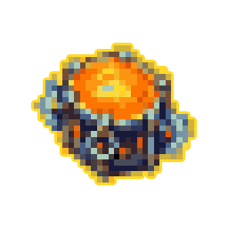
#23
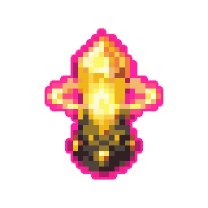
#24
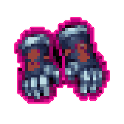
#26
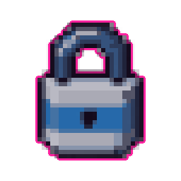
#27
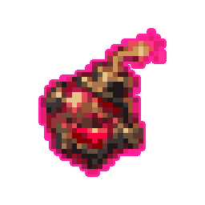
#29
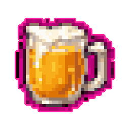
#31
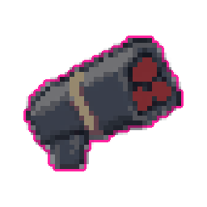
#34
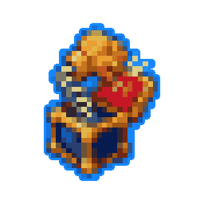
#38
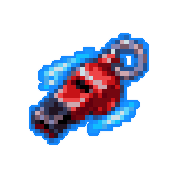
#39
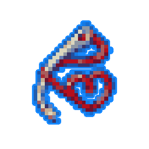
#42
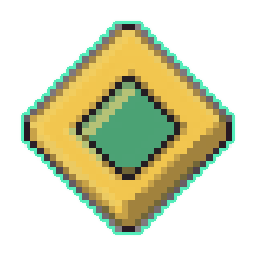
#43
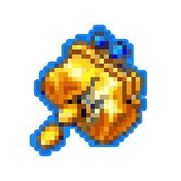
#45
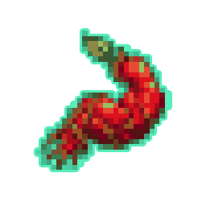
#47
#48
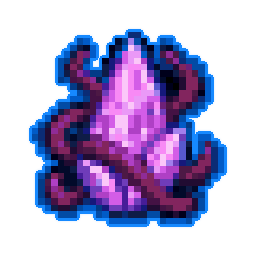
#49
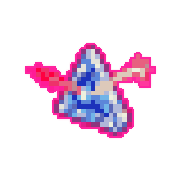
#50
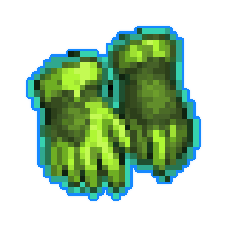
#51
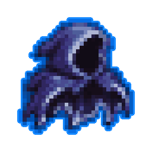
#57
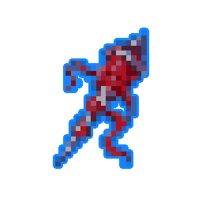
#58
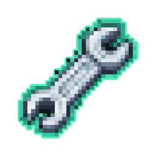
#60
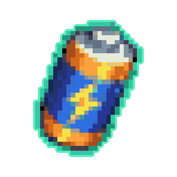
#62
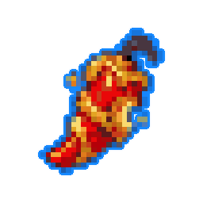
#63
#68
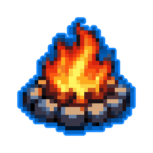
#70
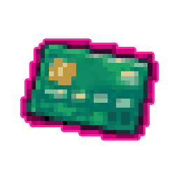
#71
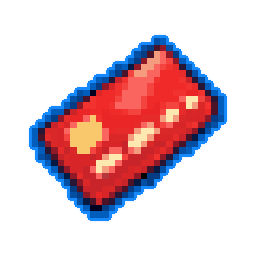
#73
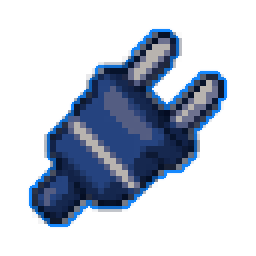
#76
#79
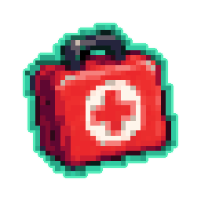
#80
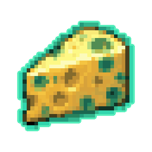